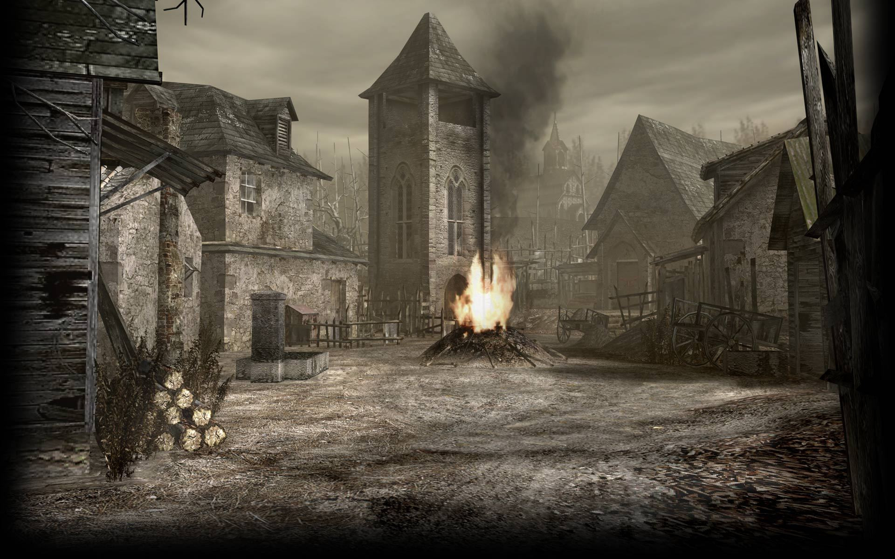
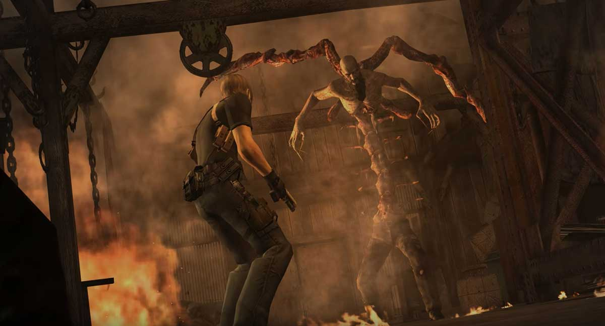
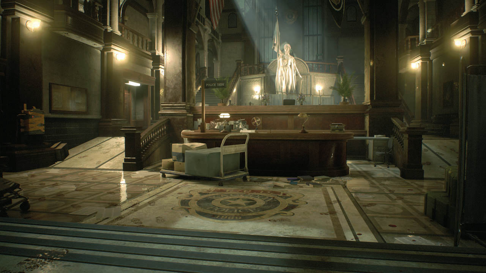
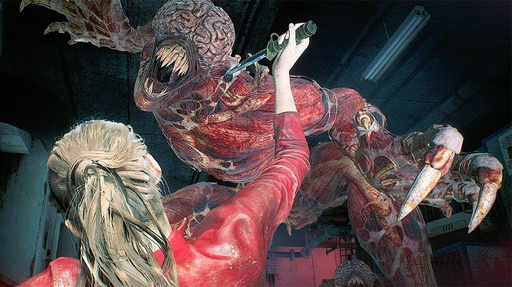
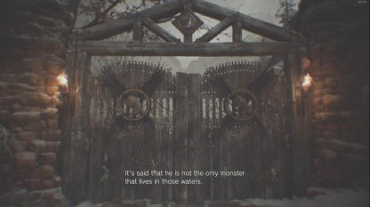
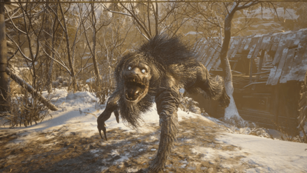

This website is a short showcase of some of the most interesting Resident Evil settings and characters. Take a look around, read closely!
Resident Evil is a long-running survival horror series that began in 1996 on the Playstation 1. Since those original chunky graphics and clunky controls, the series has evolved through several phases of different game design styles, all with survival horror as its core principle. The series has never been afraid to take risks, and done so with quality. This has kept the series alive by breathing new life into the formula whenever it began to get stale. Today, there are 8 mainline Resident Evil titles, with the most recent being Resident Evil Village as the eigth installment (Though it should be noted, some consider Resident Evil 0 as a mainline entry, making the total mainline games 9). There are also more than 15 spin-off titles in the series.

The village square that serves as the centerpiece for the intro of Resident Evil 4.

One of the early boss fights in Resident Evil 4, against a monsterously mutated man named Chief Menendez.

The lobby of the Raccoon City Police Department, employer of protagonist Leon S. Kennedy, in Resident Evil 2 (this image is from the 2019 remake). The building features many strange hidden mechanisms pathways, explained as remnants of when the building was an art museum.

One of the most iconic Residetn Evil enemies, the Licker originally from Resident Evil 2. The are notable for their mutated long tongues which they use to ensare civtims. However, they are blind, making them slightly easier to deal with if the player is sneaky.One of few iconic doors from Resident Evil Village (8). There are a handful of these marked doors scattered around the titular Village, which the player unlocks over time by finding and comibing parts of the corresponding fetus or winged key.

A Varcolac from Resident Evil Village. This monster is the result of a heavily mutated "Lycan" - werewolf-like creatures which are the result of a parasitic-mold infested human. There are only 4 Varcolac to encounter in the game (5 on the hardest difficulty).